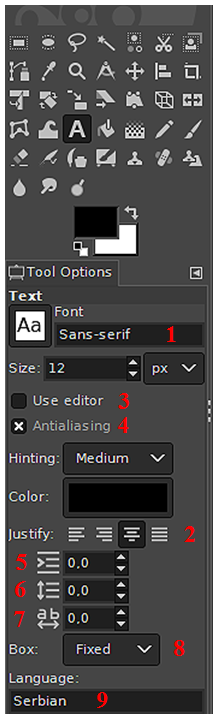
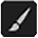
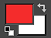
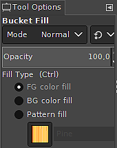
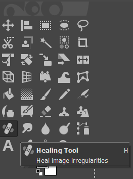
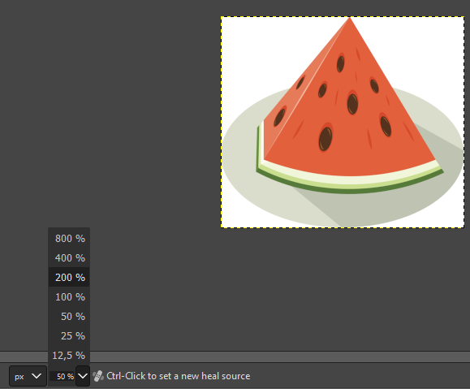
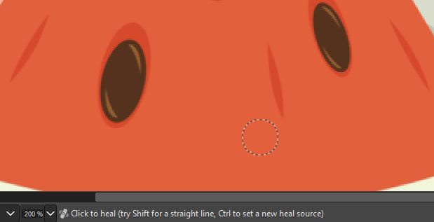
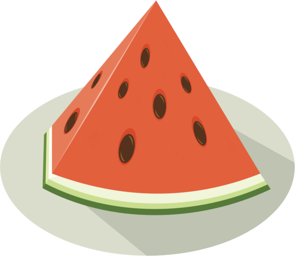

Рад са сликама¶
- На овом часу ћеш научити:
од чега зависи квалитет дигиталних слика;
како да на слику додаш текст;
како можеш да црташ по слици;
на који начин се исцртавају основни облици у програму Gimp;
шта је ретуширање и како можеш да отклониш мање недостатаке на сликама.
Скоро свакодневно користимо камере уграђене у паметне телефоне како би направили фотографије или видео-снимке. У петом разреду смо говорили о посебној области рачунарства која се назива рачунарска графика. Рачунарска графика се бави креирањем и обрадом слика и анимација помоћу рачунара. Један од начина да слика буде сачувана у меморији рачунара је да буде представљена помоћу пиксела. Овакав начин представљања слика назива се растерска графика.
Хајде да се подсетимо.
Питање:¶
- дијагонала
- Нетачно
- револуција
- Нетачно
- резолуција
- Тачно
Q-55: Како се назива број пиксела од којих се састоји слика? Означи тачан одговор.
Питање:¶
- Не
- Нетачно
- Да
- Тачно
Q-56: Да ли програми за рад са сликама омогућавају спајање више слика у једну и прављење колажа?
Пиксел је најмањи елемент слике. Број пиксела од којих се састоји слика назива се резолуција. Резолуција може да се запише као производ два броја (на пример, 1200х800). Први број представља ширину слике, тј. колико има пиксела у једном реду. Други број је број пиксела у једној колони и представља висину слике. Резолуција одређује квалитет слике и утиче на количину меморије коју слика заузима. Понекад се резолуција записује као број пиксела по инчу (на пример, 72 ppi).
Постоји велики број различитих програма помоћу којих можеш креирати и мењати слике. За рад са сликама оперативни систем Windows има уграђен програм Paint. Ипак неки други програми имају много више опција за уређивање слика. На пример, професионалци користе програм Adobe Photoshop. Овај програм је комерцијални и потребно је платити за његово коришћење.
У шестом разреду, бавићемо се основним техникама доцртавања дигиталних слика у програму Gimp 2. Програм Gimp је бесплатан за коришћење, а нуди велики број опција за уређивање слика.
Опис поступка инсталације програма за растерску графику Gimp 2 можете погледати на доњем видеу:

Програм Gimp омогућава креирање нове слике као и прављење измена на већ постојећој слици. Означени делови слике се могу копирати или премештати. Програм омогућава спајање више слика у једну и прављење занимљивих колажа и фотомонтажа. На пример, можеш креирати постер у оквиру неког пројекта.
Слику можемо да сачувамо и коришћењем опције File → Save Аs. Слика је тада сачувана у формату .xcf и можемо да је отворимо само у програму Gimp. Ако је потребно наставити рад на слици онда је можеш сачувати на овај начин. Међутим, овај формат није погодан за убацивање слике у друге текстуалне документе или мулитимедијалне презентације или објављивање на интернету.
За чување слике у .jpg формату користи опцију File → Export Аs. Код примене ове опције потребно је поставити квалитет слике (на пример на 100), а затим кликнути на дугме Export.
За прављење измене на делу слике прво треба да означиш део који желиш да мењаш. У кутији са алаткама налази се неколико алатки за означавање. На означени део могу се применити опције за уређивање слике. На пример, означени део може да се копира или премести у истој слици, у нову слику или у неку другу слику. У наставку су објашњене неке од честих измена на сликама: дописивање текста, цртање линија, додавање геометријских облика и отклањање недостатака.
Додавање текста на слику¶
У левом горњем делу прозора програма Gimp2 налази се део са алаткама (енгл. Toolbox).
За исписивање текста на слици користимо алатку .
{kind=link}
Кликом на ову алатку, испод кутије са алаткама отвара се простор у коме је могуће:
{kind=link}
подесити фонт - тип, величину, боју (Font, Size, Color)
одредити поравнање текста (Justify)
одабрати да се, током уноса текста приказује едитор (Use editor)
одабрати да се текст приказује што реалније (Antialiasing)
одредити увлачење првог реда текста (Indent)
дефинисати величину прореда (простора између редова)
дефинисати размак између слова
тип оквира за унос текста - прилагодљива (Dynamic) величина текстуалног поља у зависности од уноса текста или фиксна (Fixed) где се на почетку дефинише величина текстуалног бокса (поља).
одабрати језик
Опис поступка за исписивање текста на слици можете погледати на доњем видеу:
Цртање по слици¶
Осим додавањем текста, делове слике могуће је истаћи или додатно описати цртањем. Почећемо од цртања линије.
За исцртавање праве линије користимо алатку оловка или четкица .
{kind=link}
{kind=link}
Кликом на једну од ових алатки, испод кутије са алаткама отвара се простор у коме је могуће подесити њихове атрибуте, међу којима су најважнији:
непровидност (Opacity);
облик четкице;
величина (Size).
{kind=link}
Праву линију исцртавамо тако што кликнемо да означимо почетну тачку линије, а затим, држећи притиснут тастер Shift, померамо миша до крајње тачке линије. Да би линија остала исцртана, потребно је да кликнемо у тачки њеног завршетка.
Линију је могуће исцртати и слободном руком. Тада није потребно да држимо притиснут тастер Shift, већ притиснут леви тастер миша.
Опис поступка за исцртавање праве линије и исцртавање линије слободном руком можете погледати на доњем видеу:
Боју бирамо кликом на дугме за одабир боје предњег и задњег плана. Боју задњег плана (позадине) бирамо кликом на доњи правоугаоник, а боју предњег плана кликом на горњи правоугаоник. Отвориће се палета боја из које кликом миша одабирамо боју коју желимо. Завршетак избора потврђујемо кликом на дугме OK.
{kind=link}
Када је цртање у питању, уз оловку и четкицу увек иде алатка гумица . Бришемо тако што одаберемо алатку гумица и, држећи притиснут леви тастер миша, прелазимо преко делова слике које желимо да обришемо.
{kind=link}
Опис поступка за одабир боје линије можете погледати на доњем видеу:
Исцртавање основних облика¶
Програм Gimp2 није намењен цртању у традиционалном смислу. Ипак, можемо да нацртамо различите геометријске облике уз помоћ алатки за селекцију. За исцртавање основних облика згодно је да користимо алатке за правоугаону и овалну селекцију .
{kind=link}
{kind=link}
Кликом на једну од ових алатки, испод кутије са алаткама отвара се простор у коме је могуће подесити њихове атрибуте.
За исцртавање основних облика, најважнији атрибути су:
паперјасте ивице (Feather edges)
заобљене ивице(Rounded edges)
исцртавање облика из центра правоугаоника/овала (Expand from center)
{kind=link}
Облик квадрата исцртавамо тако што одаберемо алатку за правоугаону селекцију и, држећи притиснут тастер Shift и леви тастер миша, развучемо квадрат.
Облик правоугаоника исцртавамо на сличан начин, само што не држимо притисну тастер Shift.
Облик круга исцртавамо тако што одаберемо алатку за овалну селекцију и, држећи притиснут тастер Shift и леви тастер миша, развучемо круг.
Овални облик исцртавамо на сличан начин, само што не држимо притисну тастер Shift.
Облике бојимо употребом алатке кантица и избором боје из палете боја. У оквиру атрибута алатке кантица постоји могућност да одредимо степен непровидности боје (Opacity), као и да подесимо да кантица, уместо чисте боје, „просипа“ шаре (Pattern fill).
{kind=link}
{kind=link}
Опис поступка за исцртавање основних геометријских облика можете погледати на доњем видеу:
Отклањање недостатака на сликама¶
Приликом обраде фотографија понекад је неопходно урадити поправке оштаћених делова или уклонити ситне недостатке. Ретуширање је поступак поправљања, дотеривања и отклањања недостатака на фотографији. Професионални фотографи ове измене често раде у програму Adobe Photoshop, али бесплатан програм Gimp такође има ову могућност.
За испрвљање недостатака на слици у програму Gimp користимо алатку Healing Tool .
{kind=link}
Савет: Приликом ретуширања слике добро је да се прво сачува оригинална фотографија, па тек онда да се раде измене. Тако се увек можеш вратити на оригиналну слику уколико измене нису биле довољно добре.
{kind=link}
Након што у кутији са алаткама изабереш алатку Healing Tool постави показивач миша на део слике који желиш да користиш за поправљање недостатака и притисни тастер Ctrl. Затим кликни на део слике који желиш да поправиш. Понекад је потребно да се поступак понови више пута да би се добио жељени резултат поправљања фотографије.
Приликом ретуширања фотографије често је потребно повећати величину приказа слике на екрану ради што прецизнијег рада. Промена величине приказа на екрану не утиче на величину слике која је сачувана у меморији рачунара.
{kind=link}
На увећаном приказу лакше уочавамо недостатке које желимо да уклонимо и повећавамо прецизност у раду. На следећим сликама приказана је увећана слика лубенице и изглед слике након ретуширања када су уклоњене црвене линије.
 {kind=link}
{kind=link}
- Шта смо научили?
да је код растерске графике основни елемент за представање слике пиксел.
да је резолуција важна особина која утиче на квалитет слике и количину меморије коју слика заузима.
да је програм Gimp бесплатан за коришћење, а нуди велики број опција за уређивање слика.
да програми за обраду слика омогућава спајање више слика у једну и прављење занимљивих колажа и фотомонтажа.
да су неке од техника за измену слике: додавање текста, цртање по слици, исцртавање основних облика и отклањање недостатака.
да у раду са сликама можемо изабрати и користити две боје: боју предњег и боју задњег плана (боја позадине).